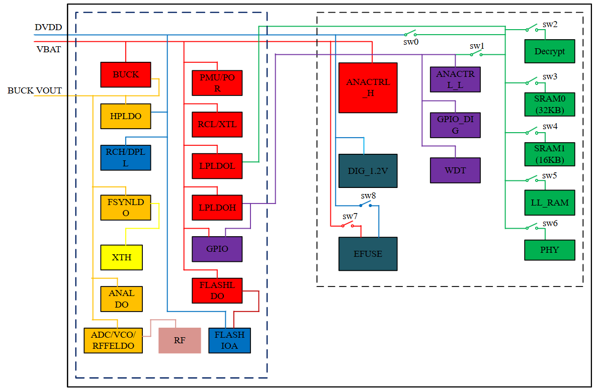
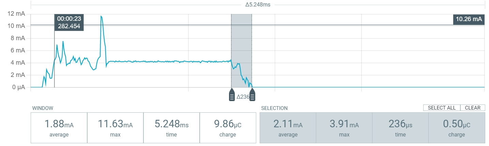
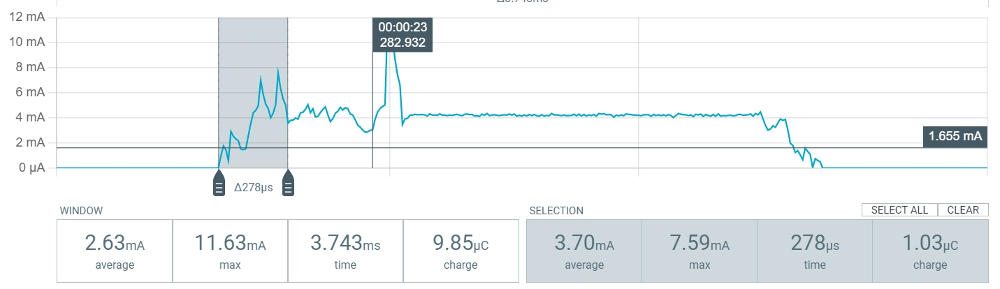
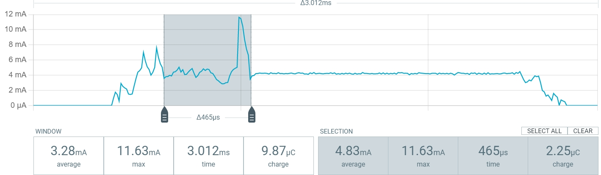
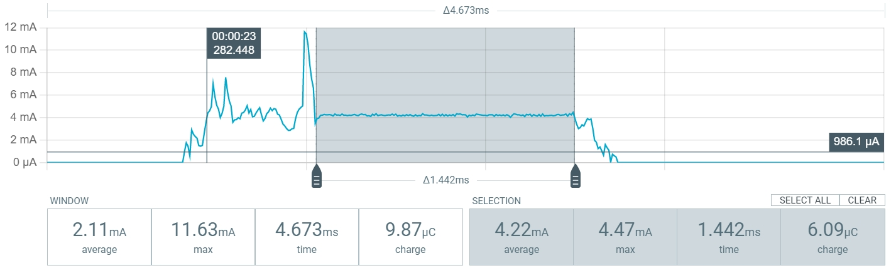

NDK 低功耗开发指南¶
本文主要通过一些示例，介绍低功耗各个模式、使用的方法以及可能遇到的问题。
1 低功耗模式¶
芯片电源结构简图：

芯片定义了 4 种低功耗模式：
Sleep 模式：
芯片供电与 Active 状态下相同，CPU 时钟停止，所有其他时钟均处于开启状态
唤醒源支持所有外设中断、BOD、LVR
DeepSleep 模式：
芯片供电：
DeepSleep Mode 1：HPLDO（1.2v）关闭，LPLDOL（0.4v）开启，LPLDOH（0.7v）开启，开关 sw0 闭合，开关 sw1 断开，开关 sw2 ~ sw6 可根据需要选择闭合或断开，芯片功耗约 3 ~ 4 uA
DeepSleep Mode 2：HPLDO（1.2v）关闭，LPLDOH（0.7v）开启，开关 sw0 闭合，开关 sw1 闭合，开关 sw2 ~ sw6 可根据需要选择闭合或断开，芯片功耗约 6 ~ 8 uA
芯片时钟：高速时钟关闭、32K 低速时钟可根据需要选择是否开启
唤醒源：所有 GPIO 引脚中断、SleepTimer、Timer0/1/2（仅限 DeepSleep Mode 2）、BOD、LVR
Standby Mode 1 模式：
芯片供电：HPLDO（1.2v）关闭，LPLDOL（0.4v）开启，LPLDOH（0.7v）开启，开关 sw0 断开，开关 sw1 断开，开关 sw2 ~ sw6 可根据需要选择闭合或断开，芯片功耗约 1 ~ 2 uA
芯片时钟：高速时钟关闭、32K 低速时钟可根据需要选择是否开启
唤醒源：所有 GPIO 引脚中断、SleepTimer、BOD、LVR
Standby Mode 0 模式：
芯片供电：所有内部 LDO 均关闭，芯片功耗约 300 nA
芯片时钟：所有时钟均关闭
唤醒源：GPIO P00/P01/P02 电平唤醒
2 开发流程¶
2.1 低功耗使用流程¶
2.1.1 Sleep模式¶
进入流程：
配置 sleep_mode 为 sleep 模式
唤醒源配置
设置flash dp_en为0
设置CPU SLEEPDEEP寄存器为0
考虑安全，建议进行一次手动3V同步操作
__WFI()；
退出流程：
唤醒源产生中断；
处理中断，清除中断源；
2.1.2 Deepsleep模式¶
进入流程：
配置sleep_mode为deepsleep模式，配置各电压域的power switch，配置rcl_en_ctrl，xtl_pwr_ctrl，Buck和flashldo的配置建议使用driver默认
Power Switch
模式1
模式2
lpldoh_en
1
1
lpldol_en
1
0
Ldo_pwr_ctrl
1
1
Ldol_pwr_ctrl
0
1
Peri_pwr_ctrl（cpu/ll_sram/phy_sram/sram0/sram1）
1（ram可配）
1（ram可配）
Lpldoh_iso_en
1（配置0待测试）
0
唤醒源配置：所有GPIO，SLPTMR，WDT，TIMER0/1/2，BOD/LVR（可选），PIN RESET。对于模式1，如果Lpldoh_iso_en配置为1，则不支持TIMER0/1/2唤醒；如果Lpldoh_iso_en配置为0，则支持TIMER0/1/2唤醒和PWM输出（需要测试是否有漏电）。对于模式2，上述唤醒源都可以唤醒系统。BOD，LVR唤醒需要开启32K时钟。
对于模式1，如果Lpldoh_iso_en配置为1，不支持PWM输出；如果Lpldoh_iso_en配置为0，则支持PWM输出（需要测试是否有漏电）。对于模式2， PWM可以输出
Flash dp设置为1，并退出enhance模式。配置合适的dp，和rdp时间
建议cpu地址重映射功能开启，映射地址为ram保电区域，可加快唤醒后，程序执行速度
设置CPU SLEEPDEEP寄存器为1
Flash控制器退出增强型模式；
_WFI()；
退出流程：
唤醒源唤醒，产生lp中断或者唤醒源相对应的中断
清除相应flag
备注：
此状态下 SWD 功能无效（无法调试或烧录程序，需要唤醒后操作）
gpio唤醒电平，至少需要保持一个完整的32K时钟周期。如果需要读取的gpio的中断，需要7个32K时钟周期（需要dly2的延时决定）；如果32K时钟关闭，则唤醒需要的时间更久，和32K时钟的启动时间相关
2.1.3 Standby_m1模式¶
进入流程：
配置sleep_mode为standby_m1模式，配置各电压域的power switch，配置rcl_en_ctrl，xtl_pwr_ctrl，Buck和flashldo的配置建议使用driver默认
lpldoh_en
1
lpldol_en
1
Ldo_pwr_ctrl
0
Ldol_pwr_ctrl
0
Peri_pwr_ctrl（cpu/ll_sram/phy_sram/sram0/sram1）
1（可配）
Lpldoh_iso_en
1
唤醒源配置：所有GPIO，SLPTMR，WDT，BOD/LVR（可选），PIN RESET。BOD，LVR唤醒需要开启32K时钟。
flash如果使用4线模式，建议开启dp模式，flash 两线切换四线的时间特别长，一般会有8ms；如果flash使用2线模式，不建议开启dp模式，flash直接掉电处理。
建议cpu地址重映射功能开启，映射地址为ram保电区域，可加快唤醒后，程序执行速度
根据需求，决定是否开启cpu保电功能，寄存器LP_FL_CTRL[4]。可硬件恢复现场，代码实现有特定需求，参见说明部分
Dly_time2需要根据测试结果重新配置，默认值比较大
设置CPU SLEEPDEEP寄存器为1
_WFI()；
退出流程：
唤醒源唤醒，产生lp中断以及唤醒源相对应的中断
清除相应flag
备注：
支持 cpu core 寄存器 retention 功能
gpio唤醒电平，至少需要保持一个完整的32K时钟周期。如果需要读取的gpio的中断，需要7个32K时钟周期（需要dly2的延时决定）；如果32K时钟关闭，则唤醒需要的时间更久，和32K时钟的启动时间相关
2.1.4 Standby_m0模式¶
进入流程：
配置sleep_mode为standby_m0模式，配置rcl_en_ctrl，xtl_pwr_ctrl
唤醒源配置：所有P00，P01，P02， BOD/LVR（可选），PIN RESET。
Flash dp设置为0
Dly_time1根据需要决定是否配置，如果不在意m0的唤醒时间不建议去修改。此处的时间测试遍历会比较多，设置的值不好控制
设置CPU SLEEPDEEP寄存器为1
_WFI()；
退出流程：
唤醒源唤醒，产生lp中断以及唤醒源相对应的中断
清除相应flag
2.2 参考相关例程¶
SDK 中提供了诸多演示芯片低功耗的例程：
裸机例程位置：
<PAN10XX-DK>\03_MCU\mcu_samples\LowPower带OS例程位置：
<PAN10XX-DK>\01_SDK\nimble\samples\low_power
低功耗例程的详细说明请参考对应例程的文档。
2.3 Standby_m1休眠唤醒¶
以standby m1模式，cpu retention and cpu continue run模式为基础介绍各个时间阶段mcu的动作。
阶段 |
说明 |
时间(us) |
备注 |
|---|---|---|---|
进入休眠 |
从软件发送休眠指令至硬件完全休眠的时间 |
236 |
|
硬件唤醒启动 |
唤醒源触发后硬件完全启动的时间 |
278 |
|
Standby M1 retention模式 |
continue run，唤醒至rx ready时间 |
465 |
此模式下软件初始化和RF初始化步骤可以省略 |
TX/RX(max 59B) |
收发最大payload的时间，根据传输速率与字节数计算得出 |
1888 |
此处按最大数据计算 |
总计 |
休眠唤醒至tx完成/rx完成的时间 |
2867 |
休眠时间

唤醒时间

软件运行至RF ready时间

RF 接收32Byte时间

3 其他说明¶
低功耗模式下供电分两部分LPLDOL和LPLDOH，其中LPLDOL给sram供电，电压为 0.4v 左右，LPLDOH给需要稍高一些电压的模块供电，供电电压 0.7v 左右。
DeepSleep模式下外设timer0/1/2作为唤醒以及PWM在低功耗下输出需要将deepsleep低功耗模式设置为模式2，即dp_mode=LP_DEEPSLEEP_MODE2。
Standby M1 cpu retention 模式唤醒后外设部分及RF MAC层寄存器需要重新初始化，PHY、保电的sram、时钟等不需要重新初始化。